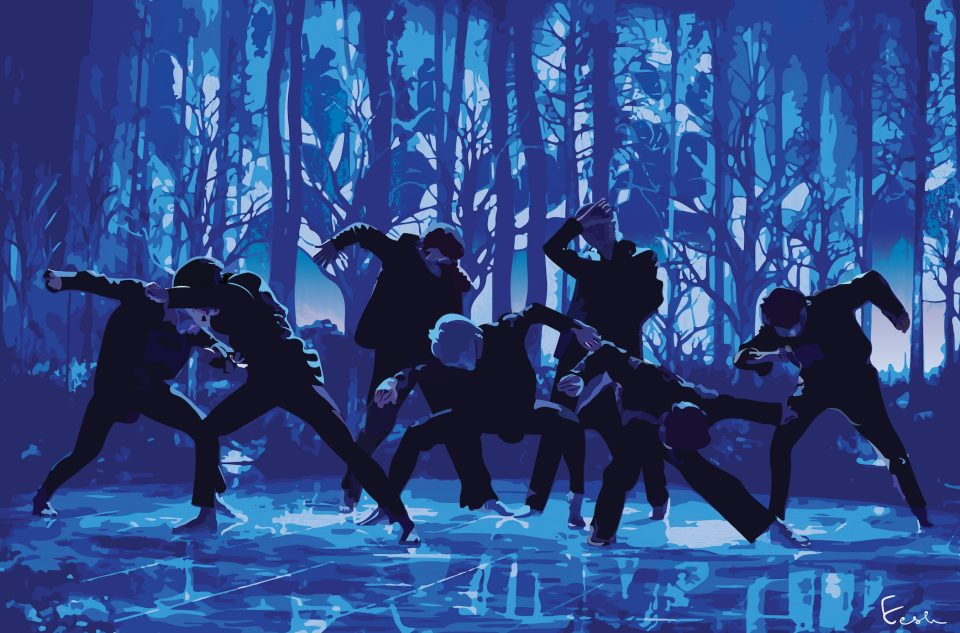
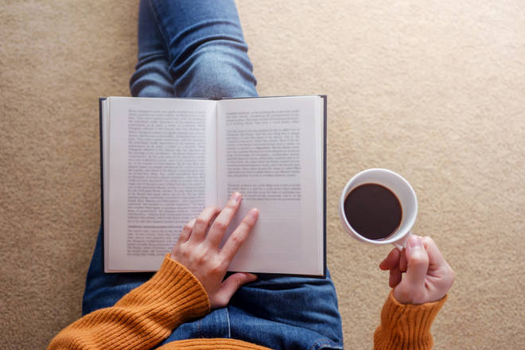
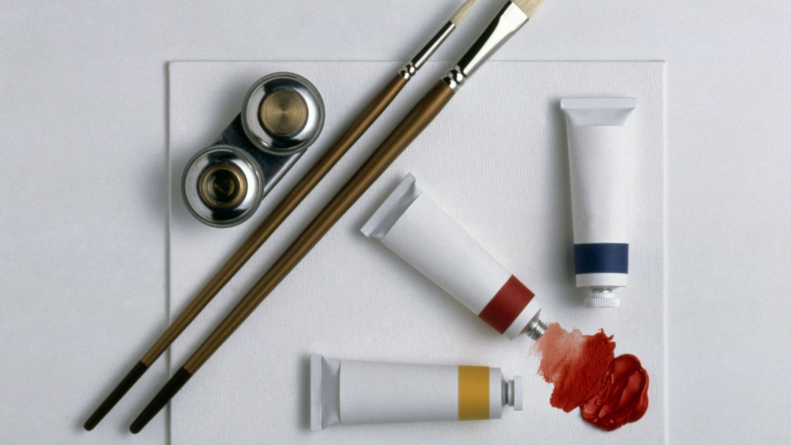

What I like to do:
- Dancing
- Everyday for 1-2 hours.
- I love dancing to Kpop songs.
- Dancing by myself, not in any school.
- Everyday around 6 dance choreographies.
- Reading
- Whenever I get the chance.
- Mostly during vacations.
- I love thriller and mystery books.
- Love suspense.
- I also enjoy graphic novels.
- Painting
- Every vacation at least 2 paintings.
- Day-time painting are my favourite.
- Started painting only a few years ago (3 years).
- I love painting sceneries.
Activity Description:
Dancing
I love to dance. I used to dance when I was around 6 years old but then I stopped at around 9 years old. For many years, I didn't like dance at all. However, when I found out about Kpop and tried out a BTS dance choreography, I knew I wanted to do that everyday. Now, I have been dancing to different Kpop dance for just 7 months and I never really want to stop. I dance for 1-2 hours everyday and sometimes 2-3 hours when I'm very bored or free. It helps me. Dancing relives my stress and with all the beautiful Kpop songs, it becomes soothing. So far, I have memorized around 15 dance choreographies, 2-3 each month. This hobby is very active so, it helps me stay fit and healthy. Overall, dancing is something I plan to continue for a long time. Here is a (link) to one of my favourite dance choreographies.
Reading
Reading was always one of my hobbies from when I was very small, around 4 years. Reading thriller books at night, mystery books at a trip or comedy books during breaks helps me cheer up everyday when I'm stressed. Reading is like wandering with my thoughts. When I start reading a book, I don't easily let it go, it is going to be there with me all the time. Having reading as a hobby is also beneficial as it enhances your learning and observing skills. When you read, you stay calm, and when you are calm, you forget all your worries. To conclude, this is one of the most relaxing hobbies I have.
Painting
Painting was always EPIC! Incorporating all the colors on the canvas is a whole new experience. I don't paint very well, however, I love it. You don't always have to be good at something you love, you just have to enjoy it. Painting is very interesting as most of the time, it helps me potray my feeling on the canvas. I don't get much time to paint since I'm very busy with many other things, however, when I paint I take about 2-3 hours and just have fun. I love painting sceneries because the world is so beautiful and I want to see that in my room. Painting is like drawing out your thoughts on a piece of paper. It can get complicated yet it seems amuzing. I recommend everyone to try some sort of art. You don't have to be good, but it will eventually be very calming. One of my favourite youtube channels for painting is (this).
These were some simple things I do when I'm free or when I want to relax.
Life Quotes:
Quote 1:
"In the end we only regret the chances we didn't take." -Unknown
Quote 2:
"Value has a value on if its value is valued." -Unknown
Quote 3:
"Good, better, best. Never let it rest. Till your good is better and your better is best." -Lindsay Fairhaust
Quote 4:
"Never give up on a dream that you have been chasing almost your life." -Park Jimin
Quote 5:
"Work hard in silence. Let your success be your noise." -Frank Ocean
Link to other pages:
| Links |
|---|
| Home Page |
| My Childhood |
| My Current Lifestyle |
| My Likes & Dislikes |
| Sources: pictures and other information |
Click here to jump to the top of this page.